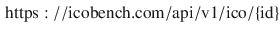
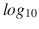
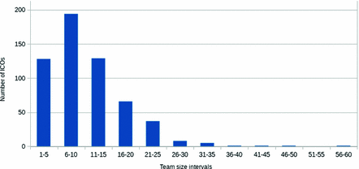
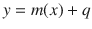
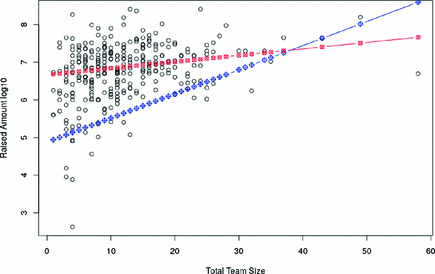

1 Introduction
ICOs are the new trend in the cryptocurrencies field. The technology to create a new cryptocurrency is cheap: in a short time and without large investments any company can present itself to the market with its fundraising and the related token. With these premises, an ICO is the most innovative solution to finance themselves outside the traditional channels, especially for startups.
In fact, a good source of funding is essential to launch a startup. At first, it is possible to apply for local or international institutional funding, that generally does not provide for the repayment of the grant, but which also involves very long waiting times and a very complex bureaucracy. Even traditional funding operations that involve venture capitalists (VCs) or business angels have long waiting times. The risk is also that a traditional VC could acquire a high percentage of shares and become prevailing in the key decisions of the company. On the other hand, a typical fundraiser needs a good marketing campaign, with many supporters participating with small amounts of money. Even a financial partner can be very risky, especially if the partner is a very experienced person who want to steal the business idea. The creation of an ICO therefore represents a valid way to collect initial capital for startups.
The success of an ICO is fundamentally based on three key elements: reliability of team members, evaluation of the project and of its white paper, and comments from other investors. Analyzing these three factors, investors should be able to answer two simple questions: “What novelty and what value does this project bring to the world?” And consequently: “Does it make sense to invest in this project?” The questions arising from this premise are therefore the following: “Can an investor monitor the evolution of the startup based on an ICO and actively collaborate on the success of this startup?” In this paper we evaluate the lean startup approach as a methodology for the implementation of an ICO based on the collaboration between all the stakeholders involved and founded on a continuous iteration process that allows investors to be an integral part in the startup’s development and therefore to interact continuously with the executive team and product development team. The paper is structured as follows. Section 2 presents the related works. Section 3 proposes an ICOs overview which includes phenomenon statistics, a taxonomy, and a description of critical aspects. In Sect. 4 we show ICOs as Lean Startups and discuss about some study cases. Finally, in Sect. 5 we present the conclusions.
2 Related Work
This paper presents an overview of ICOs initiatives, pinpointing the opportunity for early stage lean startups to raise funds in an innovative and fast way.
To date, because of its novelty, literature hardly addresses this topic. In October 2017 Flool et al. [2], analyzing the history of the blockchain technology and of cryptocurrencies, presented the ICO phenomenon as a realization of an anarcho-capitalists system, made trusty by the underlying technology. Authors reported results of their studies related to key elements which make good an ICO, stating that the crucial element is trust (generated by the technology and by the ICO features). The initial coin offering process has also been studied by Kaal et al. [4] in November 2017. They described ICOs and the related environment. In addition, they underline the similarities and differences between ICOs and the IPOs of the stocks market, focusing the attention on risks and bad practices which could compromise investments and the general trust in the ICO system. Trust creation can not ignore the legal aspects of the ICO funding mechanism. Barsen [1] gave particular attention to this aspect. He highlights regulator organisms are well equipped to apply existing regulation to virtual currencies and ICOs. He also provides a legal classification of ICOs, distinguishing the currency-like tokens from the security-like ones. In order to evaluate risks and actual value of an ICO, Venegas [7] proposed an empirical approach based on the correlation analysis of the network activity. Adhami et al. [8] too focused the attention on empirical evaluation of ICOs, classifying them in accomplished and failed. Very recently, Fenu et al. analyzed 1387 ICOs, assessing the factors that were critical to theirs success [5] using a statistical analysis, whereas Hartmann et al. analysed 28 ICO websites to reveal the state of the practice in terms of ICO evaluation [6].
ICOs are a startup funding method that has similarity with the crowdfunding. In 2014, Mollick presented results of his empirical analyses on the dynamics of crowdfunding [11] and factors that influence the performances. Recently, Wang et al. studied the effects of the interaction between creators and backers on crowdfunding success [12], basing on the sentiment analysis of the comments. On the other hand, several works focused the attention on the lean startup development and their funding opportunity. Poppendieck et al. described lean startup concept and its key elements in their tutorial [9] in 2012. In 2013, Bosch et al. proposed a early stage startup development framework [10] in which all stages which a startup team have to accomplish during the first phases of their business initiative, starting from the idea generation to the validation of the Minimum Viable Product (MVP), are described.
3 ICOs: Overview
We can describe an ICO both as a way, not regulated by an authority, to raise funds and launch a startup, and as an opportunity to take part in a project, in a DAO or even in an economic system.
3.1 The Main Characteristics of ICOs
The idea of ICO is very similar to the well-known concept of Initial Public Offering (IPO), where a company decides to place its shares on the stock exchange, to open its capital to new shareholders. In this way, new listed companies enter the stock market and consequently increase their capital. We can therefore define ICOs as investments that provide “crypto objects” to investors. These are commonly named tokens. Tokens are also considered to be coins offered during an ICO, and as such they can be considered equivalent to the shares purchased under an IPO. Note also that the vast majority of ICOs issue tokens in exchange for cryptocurrencies convertible into real money; this allows investors to access the functionality of a particular project. Moreover, ICOs in general remain open for a period of a few weeks, up to a maximum of one or two months. In the following we indicate the main features of an ICO.
- ICO prices are set by the creators of the startup or by the person who designed the project;
- the investor who owns the tokens issued by a startup in the phase of capital raising does not always have the right to express an opinion or to be part of decisions about the project, even if it remains one of the available options;
- the first investors will probably have greater advantages included in their tokens as incentives. The creators of a startup, to thank investors and to improve their loyalty, often offers them a variable bonus percentage that is proportional to the amount of cryptocurrency that the investor chooses to put in that token, and then in that startup;
- after the conclusion of an ICO, its tokens are traded on some cryptocurrency exchange, which is a website where digital currencies can be traded against each others, and against legal money, so that they can be traded very soon with respect to other kinds of startup financing;
- the startups that collect capital through ICOs are not subject to taxation (at least by now).
3.2 How Does an ICO Works?
A startup initiates the ICO process by establishing, first of all, three aspects: the blockchain [3] underlying the system, its protocols and rules. Subsequently the ICO’s creators define and make available the tokens that will be sold. In addition, in order to evoke the greatest possible interest, startups announce their ICO in several ways. The most used are represented by social media and ICO websites in which ICO’s creators describe their business project.
The new token issued during the ICO will also need to be traded in an exchange, in a similar way of trading in the stock exchange after an Initial Public Offering (IPO). ICOs active or about to be activated can be traced through different websites, whereas the sale of tokens against cryptocurrencies is performed through selected exchange platforms (the most famous being Bittrex, Kraken, Poloniex, Livecoin, SpaceBTC and Bitlish). In order to buy tokens, the investors must possess a virtual wallet holding the needed cryptocurrencies, that can in turn be bought in an exchange using traditional money. Investors can buy ICO tokens very easily and directly, starting from the startup website. So, investors eager to invest in promising startups through their ICOs have to explore thoroughly the various exchange platforms and the social media dealing with ICOs. In this way, they find and evaluate the active and forthcoming ICOs, and can make their choice, buying the chosen tokens.
3.3 Overview of ICOs Phenomenon Statistics
In this section, in order to figure out the dimension of the ICO phenomenon, we provide some statistics. We analyzed from the 1th of December up to the 12th January 2017 specialized websites1 which collect ICOs and their details. We can state that 2017 was the year of ICOs. According with icowatchlist.com data, during that year ICO raised over 3.3 billion dollars. By comparison, in 2016 ICOs raised a total of 106 million dollars2. Exploring ICOs we realize that they represent a global phenomenon. In particular, 88 nations presented at least one ICO. Despite this reality, it must be said that four countries raised over the 54% of the total. They are Switzerland (21%), United States (19.1%), Israel (7.6%) and Singapore (6.7%). As regards the number of ICOs per nation, USA, Russia, UK and Singapore are the most active nations. Table 1, summarizes the first ten nations per total raised amount.
Table 1.
The first ten nation involved in the ICO phenomenon spread
Country | Total raised | % of Total | ICO projects |
|---|---|---|---|
Switzerland | 463,775,825 | 21.02% | 51 |
United States | 421,402,100 | 19.10% | 248 |
Israel | 167,370,000 | 7.59% | 15 |
Singapore | 148,780,000 | 6.74% | 79 |
Russian Federation | 81,174,361 | 3.68% | 202 |
France | 78,050,000 | 3.54% | 15 |
United Kingdom | 61,050,000 | 2.77% | 106 |
Serbia | 53,070,000 | 2.41% | 4 |
Gibraltar | 27,480,000 | 1.25% | 14 |
Spain | 26,660,000 | 1.21% | 10 |
By the end of 2017 the icobench.com website listed 1259 ICOs, referring to a heterogeneous set of projects. About 50% of ICO projects are ICOs already ended. 33% are ongoing ICO and the remaining 17% are upcoming ICOs.
In order to understand the ICO trend we decided to categorize them by industrial sector. In this regard, we pinpointed all relevant data from the aforementioned ICO websites. However, each website presents information by considering different criteria and perspective, and only a few of them propose a classification. In general, an ICO is described by: name, logo, token, start date, end date, description, website, white paper, social links, accepted cryptocurrency, development platform, ICO price, min and max target amount to raise, country, upcoming, ongoing, ended, and so on.
Merging and cross-referencing the analyzed data, we built the taxonomy shown in Table 2. To identify the taxonomy dimensions, we made a list of categories already identified by the various websites, using as labels the most used ones. In some cases we joined some of them. In total, we identified 24 dimensions which represent the category of industrial ICO sectors. Afterward, we populated the taxonomy considering both the number of projects developed and the amount of funds raised in each specific sector. In this way, we were able to understand the ICO sector trend and the investors interest towards projects. We represent results in percentage terms. Table 2 shows that projects in Blockchain Platform & Services are the most popular: 20% of projects has been launched in this sector. We can also see that these projects are the most heavily funded, having received 25% of the total raised amount. The second most funded category is Network/Communication/Storage with 20% of funds raised. Therefore, we notice that nearly half of all investors are interested in the two above mentioned categories.
Since ICO funding is an ever changing phenomenon, the proposed classification should not be considered as definitive, but as a starting point on a path toward a more exhaustive categorization.
Table 2.
An industrial sector taxonomy of ICOs
Category | % Projects per category | % Fund raised per category |
|---|---|---|
Blockchain Platform & Services | 20,00% | 25,00% |
Finance | 12,00% | 7,00% |
Trading & Investing | 10,00% | 8,50% |
Commerce/Retail | 8,00% | 3,00% |
Payments/Wallets/Cryptocurrency | 8,00% | 9,00% |
Gaming/VR | 6,00% | 4,00% |
Funding/VC | 5,00% | 1,20% |
Network/Communication/Storage | 5,00% | 20,00% |
Betting/Gambling | 3,00% | 2,00% |
Data/Artificial Intelligence/Machine Learning | 3,00% | 2,00% |
Media/Content | 3,00% | 0,50% |
Healthcare | 2,00% | 7,00% |
Real estate | 2,00% | 0,80% |
Security/Identity | 2,00% | 2,00% |
Social Network | 2,00% | 3,00% |
Energy/Utilities | 1,50% | 0,40% |
Education | 1,00% | 0,01% |
Industry/Logistics | 1,00% | 0,20% |
Insurance | 1,00% | 0,20% |
Mining | 1,00% | 0,30% |
Transportation | 0,70% | 0,20% |
Tourism | 0,40% | 0,10% |
Legal | 0,05% | 0,40% |
Other | 2,35% | 3,19% |
We show in Table 3 the ten most funded ICOs in 2017, reporting also their category, according to the taxonomy shown in Table 2.
Table 3.
The ten most important ICOs of 2017
Name | Total raised (USD M.) | Category | Start date | Duration | Team (Advisors) | Nation |
|---|---|---|---|---|---|---|
HDAC | 258 | BC Platform & Services | 27/11/17 | 25 | 17 (7) | Switzerland |
FileCoin | 257 | Network/Communication/Storage | 10/08/17 | 31 | 13 (0) | USA |
Tezos | 232 | BC Platform & Services | 01/07/17 | 12 | 11 (3) | USA |
EOS | 185 | BC Platform & Services | 11/06/17 | 15 | 4 (0) | USA |
Paragon Coin | 183 | BC Platform & Services | 15/09/17 | 30 | 12 (0) | Russia |
Sirin Lab | 158 | Commerce/Retail | 12/12/17 | 14 | 42 (7) | Switzerland |
Bancor | 153 | BC Platform & Services | 12/06/17 | 31 | 8 (10+5) | Israel |
Polkadot | 145 | BC Platform & Services | 15/10/17 | 12 | NA | Singapore |
QASH | 105 | Trading & Investing | 606/11/17 | 02 | 9 (9) | Singapore |
Status | 102 | Other | 20/06/17 | 31 | 7 (0) | Switzerland |
ICO Dataset. The dataset has been populated using the API provided by icobench.com website3. On date 16 January 2018, we updated the ICO dataset, holding on that date information regarding 1542 ICOs. In particular, we used the POST requestwhere {id} is a progressive number that uniquely identifies an ICO. This request provided comprehensive information about each ICO stored in the website database. The data were extracted using a script written in R language, which includes the httr4 library developed by Wickham.

In order to analyze a temporally homogeneous set of ICOs, we selected the ICOs started and ended during 2017. This set includes 690 ICOs. The sum of the raised amounts by these ICOs during 2017 is about 5.20 billion dollars. Considering only ICOs with non-zero raised amount, the average value of these amounts is about 17.21 million dollars, whereas the median is 7.30 million dollars. To focus the attention on the magnitude of the raised amounts, we considered the raised amount in  scale. This value is included in the range 2–9. In addition, to describe each ended ICO, we extracted four static key features from the dataset: the ICO Duration in days, the Rate (a rating score provided by icobench.com that summarize the overall quality of the ICO), the total Team size, the number of advisors, and the total raised amount. We then excluded 119 ICOs having zero team members or whose total raised amount was not-available. We investigated if and how key features influence the final raised amount computing, at first, the correlation factor between each key element and the raised amount for each ICO. In Table 4 we summarize the four key features and their values. It is interesting to note that the ICO duration and the raised amount have a negative correlation. We focused the attention on the team size, considering all people registered in the dataset, including developers, advisors and supporters of the ICO. The average number of team members is 10.9, with a standard deviation equal to 7.1. In Fig. 1 the distribution of the team size is provided.
Table 4.
Summary of the four key elements selected to investigate how they affect the total raised amount in terms of correlation coefficient.
Duration | Team size | Advisors | Rating | |
|---|---|---|---|---|
Max value | 112 days | 58 | 17 | 4.9 |
Average | 29.65 days | 10.87 | 2.17 | 3.18 |
Standard Deviation | 18.09 | 7.05 | 3.37 | 0.80 |
Correlation | −0.28 | 0.32 | 0.22 | 0.34 |

Fig. 1.
Team size distribution
The correlation between the time size and the raised amount of the ICO in scale is equal to 0.32. To investigate the relation between team size and ICO success, we computed the average raised amount per team size (AR), and the minimum raised amount per team size (MR). Results show that both these data are more correlated with the team size than the original data. The AR and the team size have a correlation coefficient equal to 0.51, whereas MR and team size have a correlation coefficient equal to 0.76. To describe the proportionality of these results with the team size, we computed the linear regression , where and is the team size and is the  of the amount. The AR function has parameters m = 0.017 (with standard error 0.11) and q = 6.67 (with standard error 0.12). The MR function has parameters m = 0.064 (with standard error 0.009) and q = 4.88 (with standard error 0.23) Fig. 2 shows these two functions. Blue diamond dots represent the linear regression function of the minimum raised amount per team size. Red squared dots represent the linear regression function of the average raised amount per team size.
of the amount. The AR function has parameters m = 0.017 (with standard error 0.11) and q = 6.67 (with standard error 0.12). The MR function has parameters m = 0.064 (with standard error 0.009) and q = 4.88 (with standard error 0.23) Fig. 2 shows these two functions. Blue diamond dots represent the linear regression function of the minimum raised amount per team size. Red squared dots represent the linear regression function of the average raised amount per team size.
of the amount. The AR function has parameters m = 0.017 (with standard error 0.11) and q = 6.67 (with standard error 0.12). The MR function has parameters m = 0.064 (with standard error 0.009) and q = 4.88 (with standard error 0.23) Fig. 2 shows these two functions. Blue diamond dots represent the linear regression function of the minimum raised amount per team size. Red squared dots represent the linear regression function of the average raised amount per team size.
Fig. 2.
Raised amount per team size.
3.4 ICOs’ Critical Aspects
An ICO is based on the assumption that investors will buy the ICO token in order to obtain a future return on investment (ROI). In particular, an investor will buy the token at the ICO selling price with the aim of selling it after ICO ends, at a higher price. For this reason, an ICO must be organized to be attractive to investors. In short, an ICO must first of all be credible. ICO general information, the product information, the team composition, and the vision of the proposing startup, are key elements in the eyes of investors during the evaluation of investment opportunity.
In traditional VC rounds, investors acquire an ownership percentage, after a business evaluation. Conversely, ICO investors do not enter in the business ownership. Investors aim to obtain a profit on what they are buying, i.e. the token. Actually, token are something that will allow the access to some services after the startup idea will be realized. Investors wish to buy tokens whose value will increase after the startup business will launch its product. The first investment performance indicator is the ROI. As of writing, the vast majority of closed ICOs are characterized by a positive ROI, and several cases present a very high increase of the token value (see for instance the ROI of Stratis and NEO, characterized by a return on January 2018, greater than one thousand percent!). In few cases, investors lost theirs money, as in the case of Paragon ICO, one of the ICOs which raised most money, that currently has a negative ROI (−44%). Another important aspect is that ICO investment can be liquidated just by selling the bought tokens (the equivalent of the exit operation in venture capital). Tokens, however, are not directly payable in fiat currency. They have to be sold in specialized exchange websites, at the market price. This price is typically highly volatile, thus presenting a high risk. Summarizing, critical aspects of ICOs are:
- ICO project must be credible for investors (feasibility of the project, etc.);
- Token should have an intrinsic value: an ICO does not generate direct liquidity, but the value is given by its token;
- Risk of low or negative ROI;
- The investors, who are used to risk, play the role of the controller.
- The ICO tool is highly innovative: it is not possible to carry out historical analyzes or analytical forecasts. The key element of success is based on management flexibility.
The critical aspects of an ICO also can partially or totally match the typical crucial aspects of a startup firm, which operates in conditions of extreme vulnerability and faces many challenges. According to several authors [13, 14], the high failure rate of startups can be mainly attributed to the way in which the startup is managed and not only to typical market factors such as competition. The main risk of an ICO, and consequently of a startup [14], is therefore to spend time, money and energy in the development of a service or a product which people are not interested in.
What Would be Needed to Reduce the Identified Problems?
After highlighting the limitations of an ICO and the challenges that a startup faces, in the followings we point out what are the elements that can contribute to the success of an ICO.
- Investor involvement not only in the fundraising phase, but also in the subsequent phases. Business risk is therefore shared, and investors are called upon to invest only in projects they really believe in and where they can make a significant contribution also in terms of ideas. In this way, the risk of speculation is limited.
- The design idea must be manageable through a token.
- The business model must be feasible and therefore concrete, sufficiently detailed, but at the same time must be flexible.
- A complex project can be divided into phases: the first steps, if the startup project is innovative, are the most critical.
- It is good to test the project idea right away by analyzing feedback from a small number of users.
The elements highlighted above, designed to increase the probability of success of a startup, are supported by numerous studies [15–18], and are typical of lean startup methodology in which the focus is on the customer, the decision-making process is based on the facts and pivoting and agile/lean thinking is fundamental.
4 ICOs as Lean Startups
According to [19], in order to create a successful ICO it could be helpful the use of The Lean methodology and Value Proposition Canvas. These strategies in fact can be used to ensure that the market of designed product actually exists and that the idea can be considered good. In the context of an ICO, moreover, the activities can not be exclusively focused on reaching a solution, but it is necessary to examine the problem in detail before proceeding with any elaboration [20]. At the start of an ICO, in fact, both the problem and the solution are not generally well understood by investors and often also by the development team. In this context of uncertainty, the typical elements of lean startup methodology such as prototyping, execution of experiments [22], validation of initial business hypotheses and continuous learning can be easily applied as elements of greater security [15, 21]. We outline below some aspects of this methodology that can be easily applied to the management of an ICO.
- 1.The Pivot. It is a change of direction during the development of the project. All changes are based on what is learnt in the previous stages. If you reduce the time between the pivots you increase chances of success and you spend less money. The pivot is connected to the concept of feedback cycle formed by the three phases Build-Measure-Learn (BML) and to the Minimum Viable Product (MVP). A chance of success is proportional to the minimum time it takes to get through the BML loop, and then to the minimum time between pivots. With this approach, you start with an idea of product or startup, and the end result can be something else. The direct feedback and the tests by potential users of the product could therefore induce to change market segment, customer type, costs, partners, strategies, while maintaining the same vision of the startup. In an ICO, given that initial investors back the team more than the idea, the pivoting should not be a problem.
- 2.Validated learning. This process should apply to an ICO that works in an area of extreme uncertainty in order to verify the progress of the project [14]. A positive marker of an ICO in fact cannot be just the revenue. An iterative validated learning process allows an evaluation of the hypothesis (that could be valid or invalid) by running experiments and by the analysis of information that leads to the formulation of new ideas. Identifying a very clear use case that requires the decentralized approach typical of blockchain technology could be the first step of this process.
- 3.Testing. The Lean startup methodology highlights the importance of test cycles. It allows to verify concretely if the need really exists, if it is perceived by the identified target, and if it is strong enough to be satisfied. Testing speeds up learning and create a competitive value. When a stakeholder analyses an ICO, one of the most relevant questions is if the idea and the team are good in that specific context. According to Lean Startup methodology, the success of an ICO could be connected to testing the product in each phase, to verify the need and the use of the product. In accordance with the decentralized nature of the blockchain, the use of tests applied in a decentralized way can be useful.
4.1 Three Different Case Studies
In our work, we aim to analyze the ICO phenomenon based on the lean startup methodology. We examined those ICOs in which the proposer team states explicitly that a lean startup approach is used. We examined three different case studies, each with a different application of this methodology. The first ICO uses the principles of modularity, simplicity and scalability typical of lean startup methodology to develop a platform to build decentralized applications; the second, according to lean startup methodology, focuses its attention on feedback from users. Finally, the third ICO designs a platform that, using the lean startup methodology, aims to address the problem of lack of interaction between investors and development team of ICOs.
Lisk - Blockchain Application Platform. Lisk5 is one of the oldest ICOs and is a lean startup. It was registered in Switzerland by Max Kordek, Oliver Beddows and Guido Schmitz-Krummacher on 22 February 2016 and raised money in bitcoins. The platform was born from a fork of Crypti’s blockchain and its price, as well as that of most tokens, peaked in 2017. At present, Lisk is one of the most solid startups financed by an ICO. Lisk has raised over 14,000 Bitcoins or about $ 9 million at the time of the campaign, and has now a market cap of more than one $ billion. Every month, on the ICO website a monthly report is published on the activities of the startup and on its financial evolution. Lisk spends around 76,000 CHF for its running costs per month. The daily volume traded on exchanges is of several tens of million CHF. Lisk is based on the principles of modularity, simplicity and scalability typical of lean startup methodology, and provides a platform for the construction and distribution of decentralized apps. Developers have the ability to build decentralized applications (DApp) with some mainstream programming languages such as JavaScript and Node.js. Therefore, developers do not need to learn the Solidity language, as in the Ethereum blockchain. Unlike what happens to the DApp on Ethereum, the applications developed on Lisk will be built on a parallel blockchain (sidechain), so as not to create problems for the main blockchain, especially in the case of bugs. A modular SDK allows developers to take advantage of a series of libraries, modules, algorithms and third-party tools that make the development environment user-friendly and customizable, and therefore suitable for creating blockchain applications.
Galactikka - A Social Networking Project. Galactikka6 is another ICO in which the proposing team declares to use the lean startup methodology. Galactikka is an innovative social network that allows authors to promote their original content and to earn money with their posts, photos and video materials when they are published and shared. The platform integrates a community, blogs and a system for Q&A. The goal of Galactikka is therefore to help amateur authors to make themselves known and to profit from their creativity. Galactikka was designed in Russia, so its the main language is Russian. Galactikka uses the approach of phases and interactions typical of the Lean Startup methodology, giving great value to the feedback provided by the users. For this reason, in the first instance, the team prefers to use only the Russian language, because it is the language best known to them. In the first phase also the contents inserted by the users will have to be in Russian language. According to the lean startup method, it is in fact convenient to test the application on a small group of users. In this way, the development team intends to concentrate initially on a limited user target, whose language is fully understood, in order to avoid wasting energy and resources on a global audience that is too large. In this way, it is possible to increase the speed of development of the project.
doGood - Blockchain-Fueled Social Platform for Lean Startup. doGood7 aims to get through one of the main limitations of an ICO: the lack of tools that can allow investors to provide feedback during the development phases of the project idea related to a startup. With a lean startup approach, doGood wants to offer funders the opportunity to monitor the team’s progress and to provide direct guidance at all stages of the project. The lean startup methodology is needed, given the uncertainty in the evolution of the project, and in order to ensure that the proponent team provides the promised results, thus determining an increase in the value of the token. Using the lean startup methodology, the doGood ICO seeks to improve interactions between the team and other stakeholders. Smart contracts help decision making and reduce the cost and the time-to-market. In this way, it is possible to increase token value and reduce the risks involved in these ventures. doGood is therefore a web platform that stems from the idea that it is necessary to improve interaction between people by proposing a democratic method to solve complex problems based on open innovation principles, design thinking and especially on lean startup philosophies. Every person involved in the project, and therefore also every investor, in a decentralized way and from any part of the world can indeed perform a series of activities and be totally protagonist of the success of the startup. Incentives and governance system are based on the Ethereum blockchain, aiming to a better identification of solutions to problems, and to the ability of proposing arrangements in a decentralized and large-scale manner. The system is designed with the hybrid use of two architectural paradigms: a client-server architecture (centralized), and a client-server architecture based on blockchain technology (decentralized). This ICO merges the use of smart contracts with the lean startup methodology, gaining a double advantage for investors – they have greater visibility within the project and the related startup, and can provide relevant and appropriate information on the construction of the system. The token is called just GOOD. A smart contract system, in application of the lean startup methodology, is connected to the various decision-making milestones of the project’s evolution. A GOOD token is assigned to a project in exchange for the VOTE tokens. VOTE-type tokens are used by investors, proportional to the amount of GOOD Token held, to be able to cast their votes in the decision-making stages of the project. In this way, the Product Development Team can understand unequivocally, as a result of a democratic operation, what are the wishes of the investors. The use of the blockchain is useful for its intrinsic properties that guarantee authenticity and security of the vote of the stakeholders.
5 Conclusions
In our work we analyzed the new and complex phenomenon of ICOs, an alternative means of financing startups based on the concept of token and on a decentralized blockchain approach. Startups based on a ICO are playing a fundamental role in creating the market of blockchain applications. ICOs provide a pre-sale of tokens what will be used to pay for a service to be launched on the market, or even the launch of a new cryptocurrency. In most cases, the same investors become consumers or users of the same service. All this allows investors to buy crypto tokens at a discounted price, even if in reality their value will be dictated by the mechanism of supply and demand only after being placed on the market. An ICO can be a valuable tool for those teams that want to quickly obtain financing, but it also has several limitations, due essentially to the immaturity of the technological system and to the risk of financial speculation.
In this work, we analyzed the ICO phenomenon starting from the available data provided by ICO datasets, performing various statistical computations to understand what affects the ICO success. Then, we tried to understand if the Lean startup approach can be useful to solve some of ICO issues. The tokenization nature of an ICO proposal needs a form of sustainable and regulated token sale event, that can be built on an MVP. The concepts of pivot and validated learning can be very useful, but also the investors’ goals must be taken into account. They can be directed exclusively to immediate gain and not to company growth, strategic planning or operational work. A Lean startup methodology could be useful in order to respond to a tokenization that gives rise to new business models and new products or services that must effectively address customer needs. Many iterations and the direct involvement of all the stakeholders can further improve and help to market the original idea.
Acknowledgments
The work presented in this paper has been partially funded by Regione Autonoma della Sardegna, under project AIND - POR FESR Sardegna 2013. The authors thank icobench.com for permission to use their API.

Open Access This chapter is licensed under the terms of the Creative Commons Attribution 4.0 International License (http://creativecommons.org/licenses/by/4.0/), which permits use, sharing, adaptation, distribution and reproduction in any medium or format, as long as you give appropriate credit to the original author(s) and the source, provide a link to the Creative Commons license and indicate if changes were made.
The images or other third party material in this book are included in the book's Creative Commons license, unless indicated otherwise in a credit line to the material. If material is not included in the book's Creative Commons license and your intended use is not permitted by statutory regulation or exceeds the permitted use, you will need to obtain permission directly from the copyright holder.
References
1.
Barsan, I.: Legal Challenges of Initial Coin Offerings (ICP). Social Science Research Network (2017)
2.
Flood, J., Robb, L.: Trust, Anarcho-Capitalism, Blockchain and Initial Coin Offerings. Social Science Research Network (2017)
3.
Porru, S., Pinna, A., Marchesi, M., Tonelli, R.: Blockchain-oriented software engineering: challenges and new directions. In: Proceedings of the 39th International Conference on Software Engineering Companion, pp. 169–171. IEEE, May 2017
4.
Kaal, W., Dell’Erba, M.: Initial Coin Offerings: Emerging Practices, Risk Factors, and Red Flags. Social Science Research Network (2017)
5.
Fenu, G., Marchesi, L., Marchesi, M., Tonelli, R.: The ICO phenomenon and its relationships with ethereum smart contract environment. In: Proceedings of the SANER 2018 Conference, IWBOSE (2018)
6.
Hartmann, F., Wang, X., Lunesu, M.I.: Evaluation of initial cryptoasset offering: the state of the practice. In: Proceedings of the SANER 2018 Conference (2018)
7.
Venegas, P.: Initial Coin Offering (ICO) Risk, Value and Cost in Blockchain Trustless Crypto Markets. Social Science Research Network (2017)
8.
Adhami, S., Giudici, G., Martinazzi, S.: Why do businesses go crypto? An empirical analysis of Initial Coin Offerings. Social Science Research Network (2017)
9.
Poppendieck, M., Cusumano, M.A.: Lean software development: a tutorial. IEEE Softw. 29(5), 26–32 (2012)Crossref
10.
Bosch, J., Holmström Olsson, H., Björk, J., Ljungblad, J.: The early stage software startup development model: a framework for operationalizing lean principles in software startups. In: Fitzgerald, B., Conboy, K., Power, K., Valerdi, R., Morgan, L., Stol, K.J. (eds.) Lean Enterprise Software and Systems. Lecture Notes in Business Information Processing, vol. 167, pp. 1–15. Springer, Heidelberg (2013). https://doi.org/10.1007/978-3-642-44930-7_1
11.
Mollick, E.: The dynamics of crowdfunding: an exploratory study. J. Bus. Ventur. 29(1), 1–16 (2014)Crossref
12.
Wang, N., Li, Q., Liang, H., Ye, T., Ge, S.: Understanding the importance of interaction between creators and backers in crowdfunding success. Electron. Commer. Res. Appl. 27, 106–117 (2018)Crossref
13.
Blank, S.: The Four Steps to the Epiphany: Successful Strategies for Products that Win. BookBaby, Cork (2013)
14.
Ries, E.: The Lean Start-up: How Constant Innovation Creates Radically Successful Business. Portfolio Penguin, Londres (2011)
15.
Björk, J., Ljungblad, J., Bosch, J.: Lean product development in early stage startups. In: IW-LCSP@ ICSOB, pp. 19–32, June 2013
16.
Mueller, R.M., Thoring, K.: Design thinking vs. lean startup: a comparison of two user-driven innovation strategies. In: Leading Through Design, p. 151 (2012)
17.
Silva, S.E., Calado, R.D., Silva, M.B., Nascimento, M.A.: Lean Startup applied in Healthcare: A viable methodology for continuous improvement in the development of new products and services. IFAC Proc. 46(24), 295–299 (2013)Crossref
18.
Miski, A.: Development of a mobile application using the lean startup methodology. Int. J. Sci. Eng. Res. 5(1), 1743–1748 (2014)
19.
Initial Coin Offerings (ICOs): What They Are and How to Market Them. https://blog.ladder.io/ico-marketing-strategy. Accessed 10 Jan 2018
20.
Mullins, J.W., Komisar, R.: Getting to Plan B: Breaking Through to a Better Business Model. Harvard Business Press, Boston (2009)
21.
Hart, M.A.: The Lean Startup: How Today’s Entrepreneurs Use Continuous Innovation to Create Radically Successful Businesses Eric Ries, 2011, 320 pp. Crown Business, New York (2012)
22.
Moogk, D.R.: Minimum viable product and the importance of experimentation in technology startups. Technol. Innov. Manage. Rev. 2(3), 23 (2012)
Footnotes